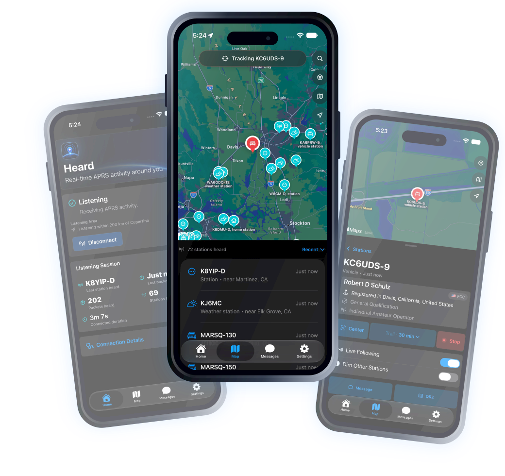
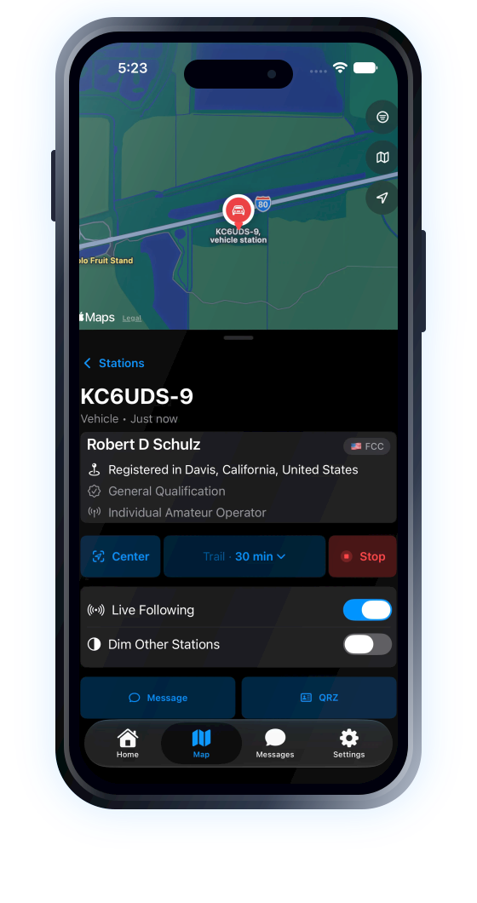

Listening area
Use your current location or choose another area manually, with the radius kept visible and easy to change.
Modern APRS exploration for iPhone
See live amateur radio activity on a clear map, understand the stations you discover, and follow movement as new APRS reports arrive.
Receive-only by default. Optional sending features only when configured.

Explore, understand, discover, follow
Heard turns APRS packets into a clear view of the stations, movement, identities, and local activity happening around you.
Start with a rich, interactive Apple map populated by station-aware symbols. Sort recent activity, browse a clear station list, and move naturally between the map and the details below.


Open a station to see what was heard, when it was heard, and the useful information carried in its APRS report. Heard keeps technical details available while making the common questions easy to answer.
Install the local directories you need, then add operator and licence context to stations and callsign searches without sending every lookup to a remote service.


Choose a moving station and keep it in view as new reports arrive. Heard can preserve your zoom, draw a breadcrumb trail, and reduce the visual weight of everything else.
The essentials, thoughtfully handled
Use your current location or choose another area manually, with the radius kept visible and easy to change.
Search stations already heard and, when a directory is installed, find records that have not appeared live yet.
Sending-related features are available only when you deliberately configure them. Heard starts as a receive-only APRS listener.
See the last station, last packet, packet count, station count, and connected duration at a glance.
Raw packet details and connection information remain available without overwhelming the primary experience.
Dark, tactile, and built with native Apple frameworks, accessibility support, and reduced-motion awareness.
Privacy in plain language
Location access is optional. Directory records are queried locally after download. Heard does not include advertising or third-party tracking SDKs.
Real screens from Heard
Every screen shown here is from the working app, not a fabricated marketing interface.
App Store release
Heard is preparing for its first public release on iPhone. The official App Store link will appear here when the app is approved.
Contact: support@ghostwind.app